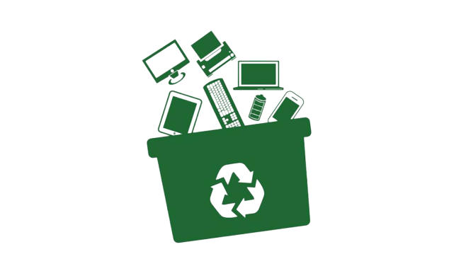
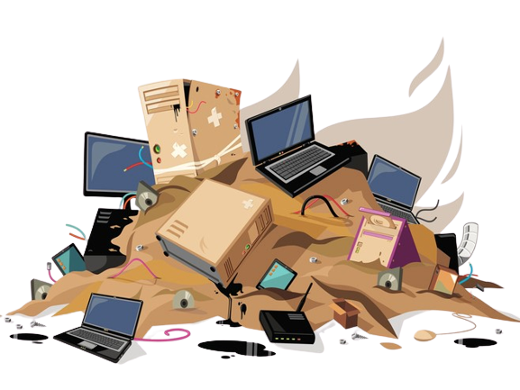

Por que o descarte de lixo eletrônico é importante?
A crescente dependência da tecnologia resulta em um aumento significativo na produção de dispositivos eletrônicos. No entanto, muitos não percebem que esses aparelhos contêm materiais tóxicos que podem causar danos ambientais graves quando descartados incorretamente. É essencial compreender por que o descarte adequado é vital:
Proteção do meio ambiente: Dispositivos eletrônicos frequentemente contêm substâncias perigosas, como mercúrio, chumbo e cádmio. Quando jogados no lixo comum, esses produtos químicos podem contaminar o solo e a água, prejudicando ecossistemas inteiros.
Conservação de recursos: Ao reciclar ou reutilizar eletrônicos antigos, você contribui para a economia de recursos preciosos, como metais raros e minerais. Isso reduz a necessidade de mineração e a exploração de recursos naturais.
Segurança pessoal: O manuseio inadequado do lixo eletrônico pode expor os indivíduos a riscos à saúde devido à exposição a substâncias tóxicas. O descarte responsável protege você e sua comunidade.
Como descartar seu lixo eletrônico de forma responsável:
Reciclagem: Procure centros de reciclagem de eletrônicos em sua região. Eles têm o conhecimento e os equipamentos adequados para desmontar e reciclar dispositivos eletrônicos de maneira segura.
Doação: Se seus aparelhos ainda estiverem em boas condições, considere doá-los para organizações de caridade, escolas ou indivíduos que possam aproveitá-los.
Programas de recompra: Muitas empresas agora oferecem programas de recompra para dispositivos usados, incentivando o retorno dos produtos para reciclagem ou reutilização.
Coleta de eletrônicos: Em algumas áreas, há serviços de coleta de lixo eletrônico programados pela prefeitura. Fique atento a essas oportunidades de descarte responsável.